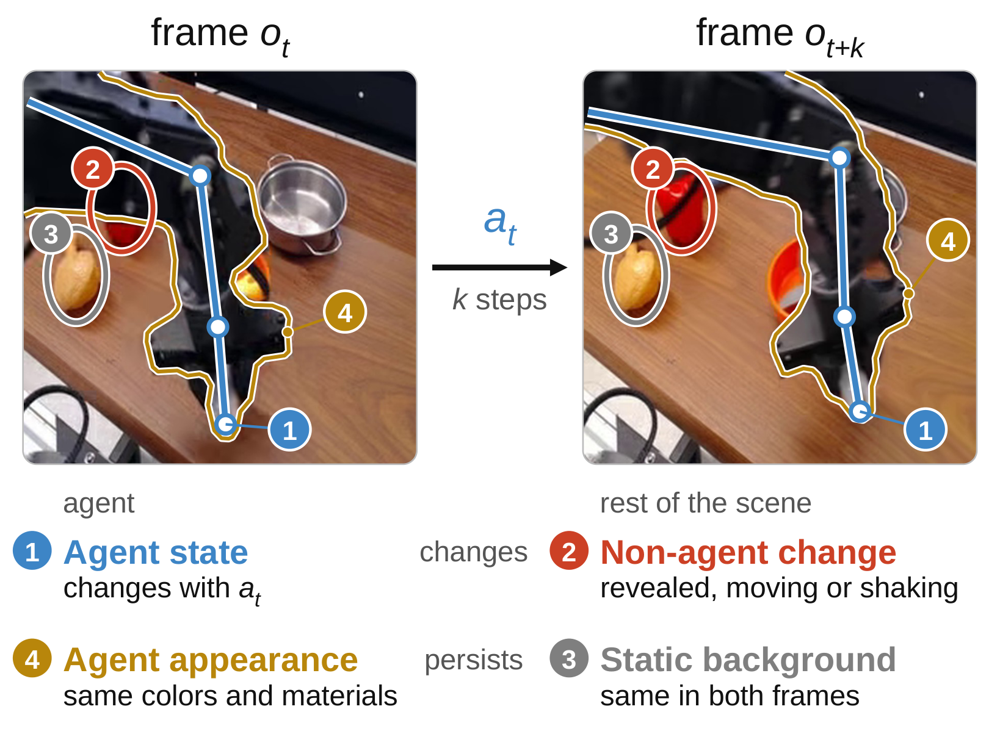
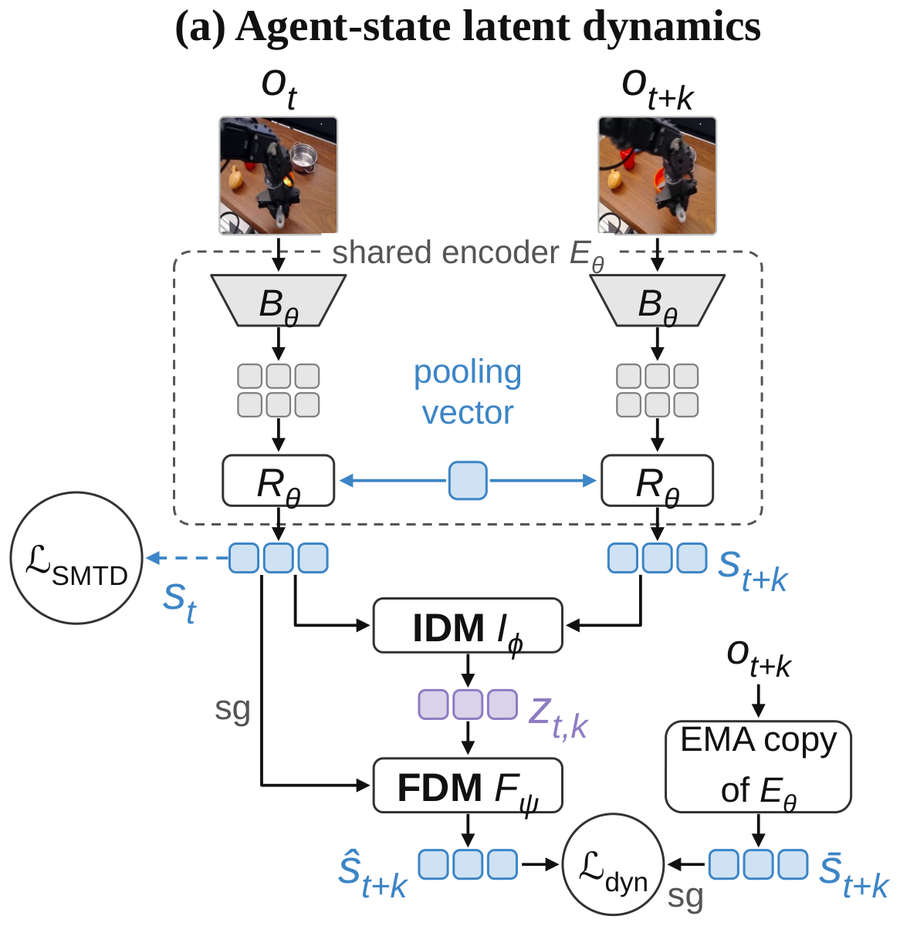
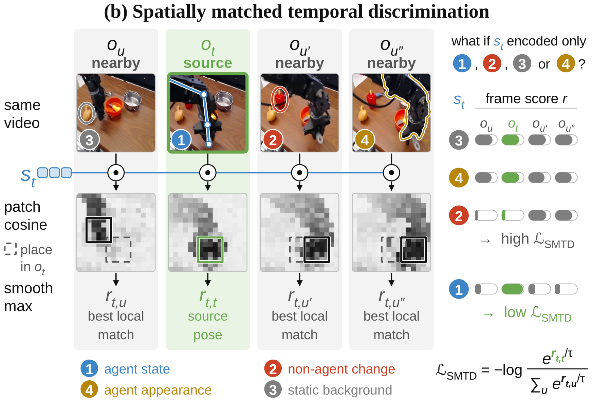
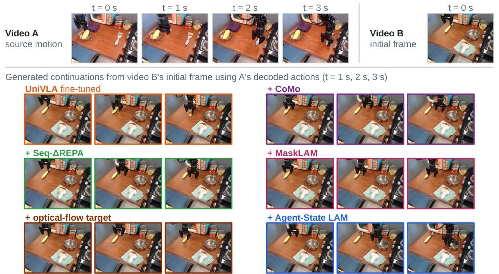

Learning Agent States for Latent Action Modeling
1Carnegie Mellon University 2University of California, San Diego 3Mohamed bin Zayed University of Artificial Intelligence
Agent-State LAM jointly learns a compact agent-state representation and latent actions that model its transitions. Spatially matched temporal discrimination (SMTD) guides what the state retains, without action labels, masks, or optical-flow targets.
Two-minute overview: latent action models, the four visual factors, the compact state, SMTD and the results. Silent, with on-screen captions.
Abstract
Latent action models (LAMs) learn action-like latents from unlabeled video by coupling frame-pair inference with latent-conditioned prediction, enabling policy and world-model pretraining. However, what the latent must explain depends on the representation space used for action inference and transition prediction. When this space entangles the agent's evolving physical state with visual context, such as background and persistent agent appearance, inferred latents can encode information unrelated to the agent's actions. To address this challenge, we propose Agent-State LAM, which jointly learns a compact agent-state representation and latent actions modeling its transitions. The compact state aggregates dense visual features into a shared space for both action inference and forward prediction. To guide what this state retains, we introduce spatially matched temporal discrimination (SMTD), which trains the state to distinguish its source frame from nearby frames through spatially flexible matching with frozen local visual features. Rather than comparing global frame representations, SMTD scores each frame by emphasizing its strongest local feature matches across spatial locations. This scoring allows background and persistent agent appearance to remain matched across frames despite displacement, making these shared cues less informative for identifying the source frame and encouraging the representation to capture the agent's evolving physical state. Extensive experiments on distracting control tasks and six real robot video datasets demonstrate improved action recovery, downstream control, and world-model prediction.
What Should a Latent Action Explain?
Constraining latent capacity via VQ or KL limits how much information a latent action encodes, not which visual factors it captures. When action inference and forward prediction operate on pixels or dense features that entangle the agent's state with visual context, the inferred latent can encode changes unrelated to the agent's actions.
Four Visual Factors in One Robot Transition
Visual features used to infer latent actions can entangle the agent's physical state 1 with visual context 2–4 (Figure 1). Select a factor to see it outlined in the robot clip.

Between \(o_t\) and \(o_{t+k}\), the arm's physical pose changes (1), while its surface material persists (4), arm motion reveals previously occluded objects (2), and static scene content stays unchanged (3).
The arm's physical pose changes with its action: the change a latent action should explain.
Agent-State LAM & Spatially Matched Temporal Discrimination
Agent-State LAM jointly trains a state encoder and inverse and forward dynamics models on unlabeled video. Both dynamics models operate on a compact agent state, whose content is shaped by latent-conditioned prediction and SMTD.

A compact agent state for both dynamics models
The shared encoder \(E_\theta = R_\theta \circ B_\theta\) runs a visual backbone \(B_\theta\), and an attention-pooling map \(R_\theta\) aggregates its \(N\) spatial features of width \(c\) into one compact state \(s_t \in \mathbb{R}^d\) with \(d \ll Nc\): \(d = 384\) vs. \(Nc = 12{,}288\) on DCS, and \(768\) vs. \(196{,}608\) on real robot video.
The inverse dynamics model (IDM) \(I_\phi\) infers a latent action from two states \(k\) steps apart, and the forward dynamics model (FDM) \(F_\psi\) uses it to predict the later state, against a target \(\bar{s}_{t+k}\) from an EMA copy of the encoder:
Spatially matched temporal discrimination (SMTD)
Compactness alone does not decide what the state keeps: a state that encodes only static background can stay constant within a video and be copied forward with zero prediction loss. SMTD therefore trains each state \(s_t\) to identify its source frame among nearby frames of the same video.

Score each frame by its best local matches
The projected state \(q_t = q(s_t)\) is compared with every frozen DINOv2 patch feature \(f_{u,p}\) of a frame \(o_u\). A smooth maximum over patch locations gives the frame score, so a match counts wherever it appears (solid boxes), not only at its place in \(o_t\) (dashed):
Pick out the source frame
With the source time \(t\) as the positive and nearby times \(u\) of the same video as negatives, SMTD minimizes:
Why shared context does not help
The scores on the right of the figure are illustrative, for a state that encodes a single factor. Static background 3 and persistent appearance 4 are matched in every frame, and the pepper 2, hidden by the arm in \(o_t\), only in \(o_{u'}\) and \(o_{u''}\): none scores the source higher, so the loss stays high. The agent's state 1 is matched best at the source pose, which gives a low loss.
Conditioning Frozen Video World Models from Decoded Latent Actions
A linear ridge decoder maps each model's quantized latents \(z_q\) to native robot commands that condition frozen Cosmos-Predict2 (2B) on IRASim and Cosmos 3 Edge (4B) on Bridge V2 and RT-1—with no text prompt and identical initial frames and seeds.
Unlabeled source clip: the arm moves onto the pot.
The generated arm stays over the towel.
The generated arm also stays over the towel.
The generated arm moves onto the pot, as in Video A.
Latent actions inferred from Video A are mapped to robot commands by a linear decoder fitted on training data, and the commands drive frozen 2B Cosmos-Predict2 from the initial frame of Video B (same generator and random seed in every row).
On the test clips, Agent-State LAM gives the highest PSNR of all latent action models on IRASim, Bridge V2 and RT-1, and the highest WorldArena trajectory accuracy of the tracked arm on IRASim and Bridge V2 (Table 5 of the paper).
Same-Clip Rollouts: All Eight Conditionings Side by Side
Same initial frame, frozen generator and random seed for every model; only the conditioning commands differ.
More Cross-Context Motion-Transfer Examples
Commands decoded from video A drive the generator from the first frame of video B (Figures S3 and S4).

Video A's arm moves down onto the orange cloth. Only Agent-State LAM reproduces this downward reach in scene B; the baselines stop short.
Action Recovery & Control
Evaluated under shared architectures and identical training budgets across six real robot datasets and four Distracting Control Suite tasks.
Normalized Action-Probe Test Error (↓ Lower is Better)
Linear ridge probes predicting held-out end-effector translation from quantized (\(z_q\)) or continuous (\(z\)) latents.
Fine-tuned UniVLA and its variants; the released models and the true-action reference are in Table 4 of the paper.
Action Recovery & Control in DCS
Action error (↓ lower is better): test error of a linear probe mapping the latent actions to the true actions.
Natural DAVIS video backgrounds with camera and color perturbations; all methods share LAOM's 10-epoch budget and evaluation protocol. LAOM and its variants, MaskLAM and Agent-State LAM; LAPO and the references trained with action labels are in Table 1 of the paper.
Among latent action models trained without action labels, Agent-State LAM has the lowest action error on all four tasks and the highest return in both control stages (Table 1 of the paper).
Pose Retrieval Across Visual Contexts
Does cosine similarity in the learned state retrieve frames with the same physical pose across episodes, backgrounds and agent appearances?
Cross-Context Pose Retrieval on DCS
At every step of the source clip, each model retrieves its nearest frame, by cosine similarity between visual representations, from two galleries of other trajectories (A and B) rendered with the change named in the tab.
Source trajectories and galleries are those of Figure 3, shown here at every second step, in slow motion. Agent-State LAM has the highest pose retrieval rate in all three settings (R@1 in Table 2 of the paper).
Arm-State Retrieval on Real Robot Video
At every frame of the source episode, each model retrieves its nearest frame from another episode among 8,000 held-out frames, by cosine similarity of its per-frame vector.
The source episodes are those of the supplementary figure, shown frame by frame. Agent-State LAM has the highest arm-state retrieval rate on all six datasets (R@1 in the supplementary table of the paper).
BibTeX
@article{xie2026agentstate,
title = {Learning Agent States for Latent Action Modeling},
author = {Xie, Shaoan and Feng, Fan and Zhu, Peiyuan and Spirtes, Peter and Zhang, Kun},
journal = {arXiv preprint arXiv:2611.32017},
year = {2026},
url = {https://agent-state-lam.github.io}
}